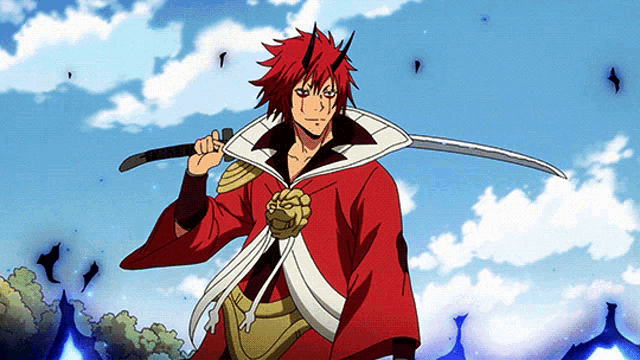

-
Rimuru Tempest

- Slime
Rimuru Tempest é o principal protagonista da série, fundador e Rei do país dos monstros Tempest da Grande Floresta de Jura, no passado já foi um humano chamado Satoru Mikami, mas, após ser esfaqueado e quase morto, ele renasceu como um "Slime" (Monstro de Lodo) tornando-se o Grande Lorde Demônio.
-
Veldora Tempest
- Dragão
Veldora Tempest é o caçula dos quatro dragões mais fortes, os "Verdadeiros Dragões". Foi ele quem deu o nome a Rimuru Tempest, e Rimuru, por sua vez, deu-lhe o sobrenome.
-
Gobta
- Goblin
Gobta 「ゴブタ, Gobuta」 é um hobgoblin e é seguidor de Rimuru Tempest. Ele é o único dos seguidores de Rimuru a receber o direito de oficialmente “conversar em tom casual” com Rimuru que levou a intensa inveja de Shion e Shuna (duas das maiores admiradoras de Rimuru).
-
Treiny
- Dríade
Treyni (トレイニーtoreinii ? ) é uma dríade que reside na floresta de Jura, como superintendente da floresta, Treyni possui certa dignidade e nível de graça condizente com o papel. Ela fala bem e é inteligente, capaz de mediar entre várias partes com facilidade.
-
BENIMARU
- Ogro
"Rei da Chama" Benimaru「赫怒王フレアロード 紅丸ベニマル, "Kakudo Ou"F u r e a R o o d o Benimaru, lit. "Garoto escarlate"」 é um dos terceiro grupo de subordinados a ser nomeado por Rimuru Tempest. Originalmente um Ogro, ele estava inseguro de sua servidão e pediu para ser temporário, mas depois de ser nomeado, ele evoluiu para um Kijin, tornando-se imediatamente o mais poderoso subordinado de Rimuru na época, e decidiu serví-lo permanentemente.
-
Souei
- Ogro
”Yami" Souei「"闇" 蒼影ソウエイ "Yami" Sōei, lit. "Sombra Azul"」ou "Souei a Escuridão" é um dos terceiro grupo de subordinados a ser nomeado por Rimuru Tempest, ele é a sombra fiel de Rimuru e o líder do Esquadrão das Sombras do Departamento de Inteligência de Tempest. Mais tarde, após a evolução de Benimaru em um Lorde Demônio, ele foi tratado como sua sombra, talvez como um meio de preservar seu relacionamento duradouro durante os dias do Ogro.
-
Hakurou

- Ogro
Hakurou 「 白老 ハクロウ Hakurō, lit. "homem branco velho"」 é um dos terceiro grupo de subordinados a ser nomeado por Rimuru Tempest. Originalmente, depois de evoluir para um Kijin de um Ogro, ele desempenhou um papel fundamental na ofensiva e defesa de Tempest, especializando-se na arte de Iaijutsu.
-
Shuna
- Ogro
Shuna é uma garota gentil e perdoadora com sentidos aguçados. Sendo criada como princesa ela também tem uma personalidade refinada e graciosa.
-
Shion
- Ogro
Shion trabalha como secretaria de Rimuru, e muita das vezes toma as decisões no lugar de Rimuru por impulso. Shion tem a culinária extremamente ruim, fazendo com que todos os seus amigos evitem-a ao máximo.
-
Mlin Nava

- Dragonoid
Ela é a única Dragonoid existente com o apelido de Destruidora, e muitas vezes chamada de tirana por causa de sua personalidade infantilmente irritável combinada com seu poder.